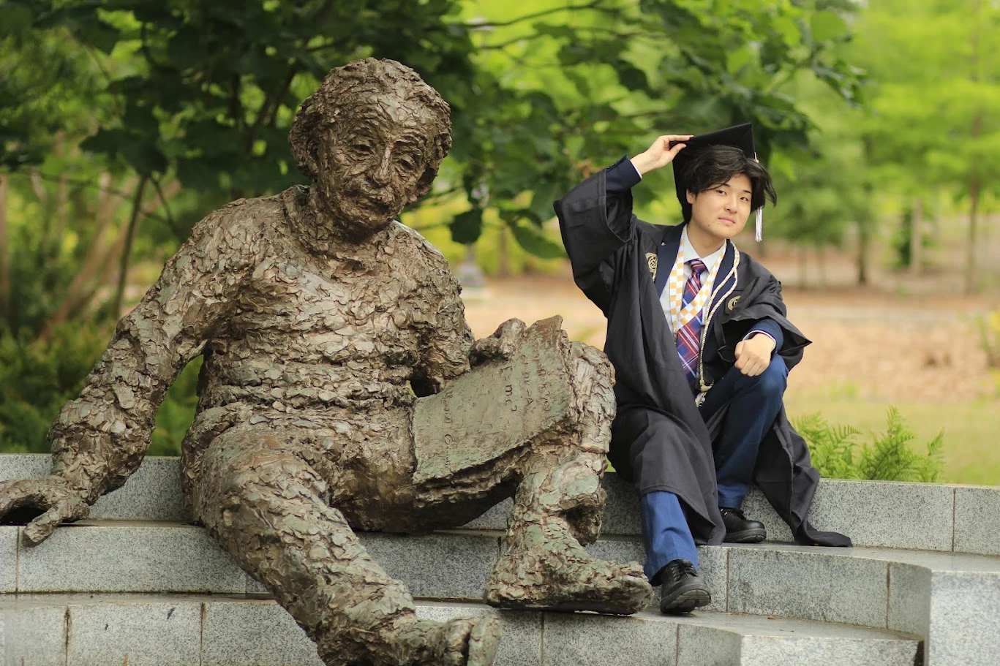

Georgia Institute of Technology
M.S. Mechanical EngineeringExpected May 2027
Mechanical Engineer | UAV Systems | Robotics | Systems Integration
I'm pursuing my M.S. in Mechanical Engineering at Georgia Tech, where I completed my B.S. in May 2026. My experience centers on UAV systems, robotics, and electromechanical hardware. I enjoy the practical work of designing and building a system, troubleshooting its interfaces, and understanding how it performs once assembled.


Expected May 2027
May 2026 · Highest Honors · GPA 3.96/4.0
I worked on UAV subsystem integration, troubleshooting, and configuration documentation, and developed a Python performance estimator.
View Heven →I guide interdisciplinary student teams through concept development, simulation-based design, and physical prototyping.
I supported competition operations and safety checks and taught fabrication methods and safe use of lathes, mills, laser cutters, and 3D printers.
I led the VTOL subteam, working on tiltrotor structural concepts and Pixhawk avionics integration.
Additional team experience includes GT Supersonics avionics/RC integration, RoboGrinder hardware and aircraft restoration, and competition robotics. View supporting projects →
SolidWorks, SolidWorks Simulation, Onshape, mechanisms, mounting interfaces, and structural analysis.
Pixhawk, PX4, ArduPilot, QGroundControl, Mission Planner, flight tuning, and robot payloads.
Flight electronics, companion computers, communications, telemetry, troubleshooting, and configuration documentation.
FDM printing, laser cutting, airframe fabrication, machining, and assembly.
Python, Tkinter, MATLAB/Simulink, and engineering performance estimation.
I'm particularly interested in autonomous aircraft and robotics, with roles that combine mechanical design, systems integration, and hands-on testing.
Based in Pleasanton, CA. Available for Spring 2027 internships and full-time roles starting Summer 2027.